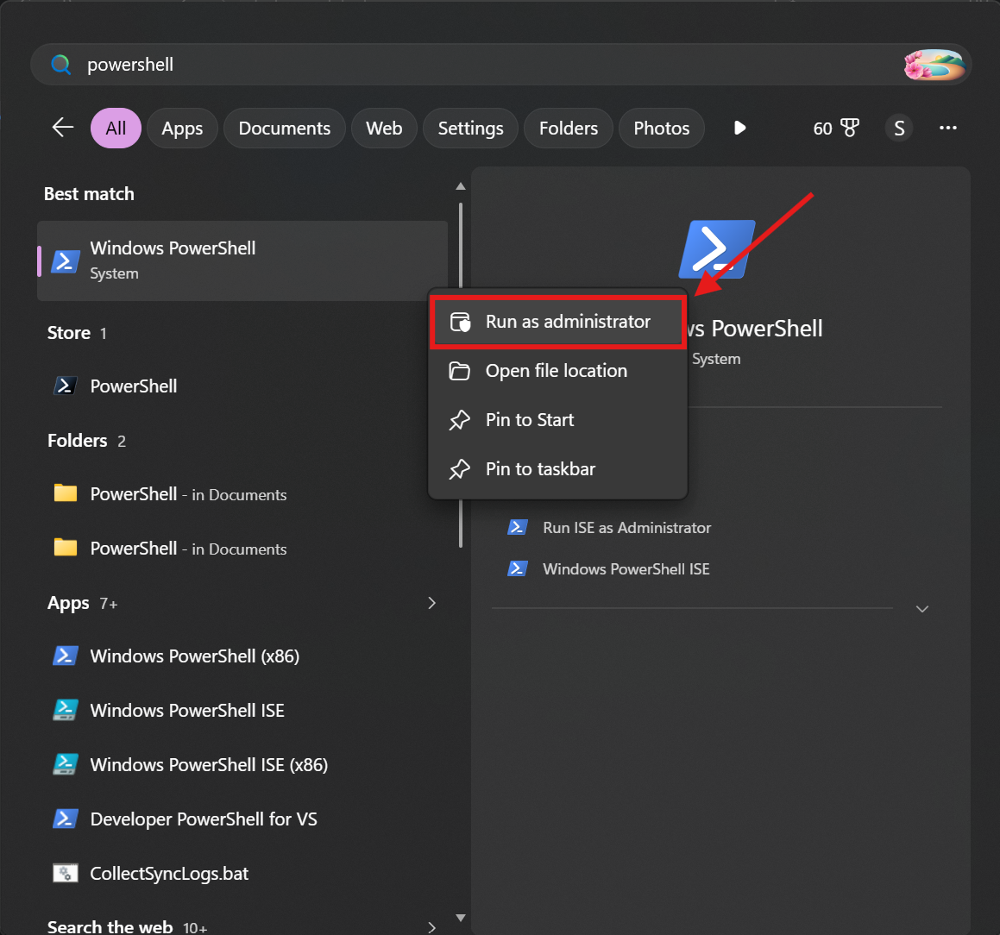
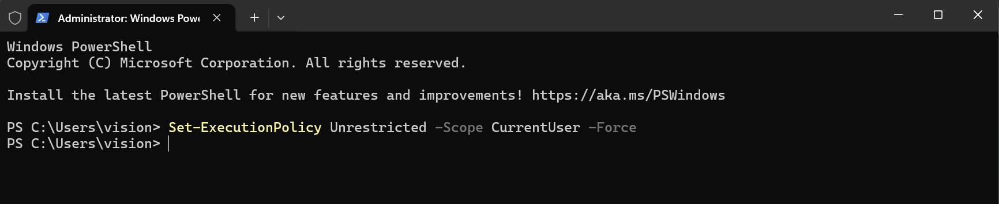
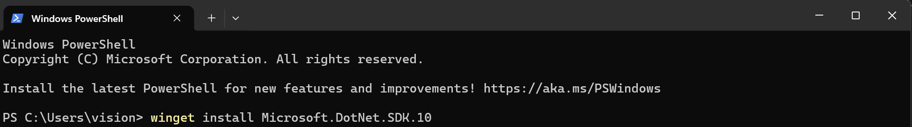
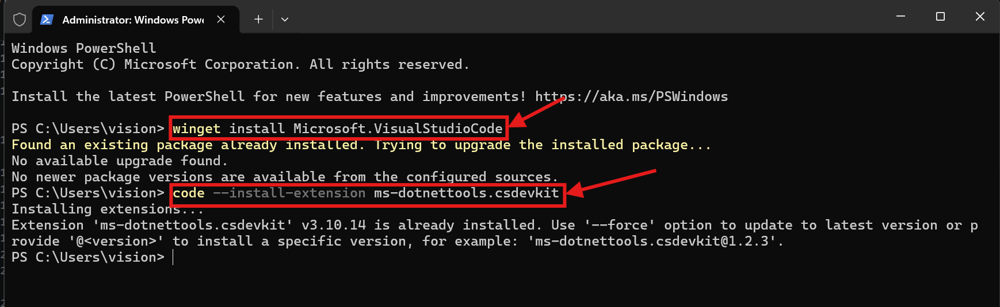

Follow each step in order. All commands run in a single PowerShell window.
Press Win + S, type PowerShell, right-click the result and choose Run as Administrator.
powershell.png

Windows blocks scripts by default. Paste this command and press Enter:
Set-ExecutionPolicy Unrestricted -Scope CurrentUser -Force
-Scope CurrentUser limits this change to your account only. Other users on the machine are unaffected.If you see a confirmation prompt, type Y and press Enter to proceed.
execution-policy.png

winget is Windows' built-in package manager. The SDK includes the runtime, ASP.NET Core, and the dotnet CLI — no separate downloads needed.
winget install Microsoft.DotNet.SDK.10
winget.png

Run these commands one by one. After VS Code installs, open a new terminal window so the code command becomes available, then run the extension command.
winget install Microsoft.VisualStudioCode
code --install-extension ms-dotnettools.csdevkit
image.png

Open a new PowerShell window (no need for Administrator this time) and run:
dotnet --version dotnet --list-runtimes
You should see output like this:
Both AspNetCore.App and NETCore.App appearing confirms the SDK and runtimes installed correctly.